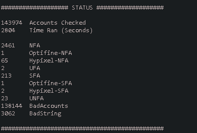

AeroChecker
Minecraft Technology introduces AeroChecker, your new, and now your only, Minecraft Account Checker.
+ AeroChecker is is cross platform and has MacOS, Windows, and Linux support.
+ With our drag and drop system, all you have to do is find the text file containing the accounts you want to check and put it into the AccountListToCheck folder. If there are any duplicates or accounts that are missing emails, usernames, or passwords, our system will find them, and get rid of them for you.
+ Our software has a fully custom proxy checker built in. You no longer have to specify what kind of proxies you are using, or if your proxies are working. Our system is able to detect the type of proxies you are using, and if some of your proxies aren't working, the system will automatically disable them, resulting in fewer failed requests.
+ While it's not recommended for large lists, our software can also be run without proxies and still be successful.
+ The software checks for UFA, SFA, UNFA, and NFA accounts, and also has an integrated OGName, Optifine, Hypixel Rank, and Minecon finder that break all the accounts down and let you know what is what in organized files. You won't miss out on anything.
+ Our software is capable of detecting Optifine Capes that aren't activated on accounts, meaning if you have used previous checkers in the past, these accounts could have been missed!
+ The days of confusing config files are over! We want to make sure everything is as straight forward and as easy to use as possible. Not only is our software simple and straight forward, the config file that makes everything work walks you through how to use it!
+ The console is easy to read, and easy to understand.
+ AeroChecker is able to check accounts efficiently and quickly, unlike any other account checker out there.
